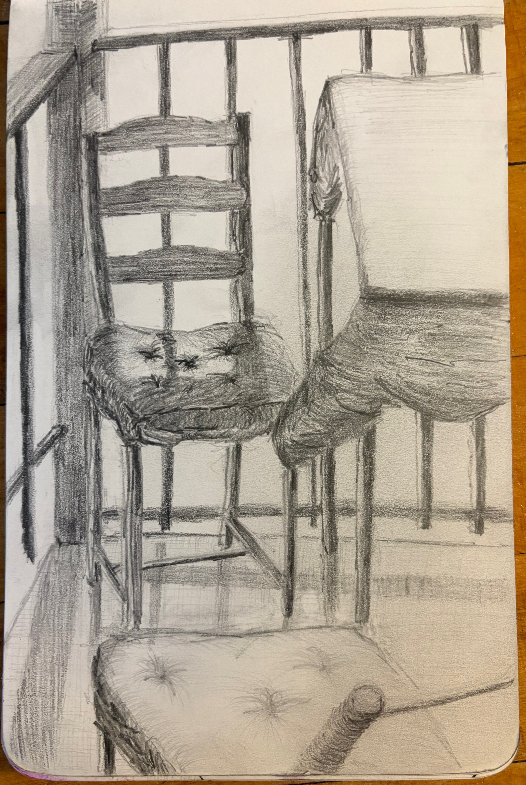

Sketch of one of my favorite spots to spend time from the summer of 2026. This was one of the first pencil drawing I had done all summer, so it was fun to feel the difference in working with pencil vs. pen again.
